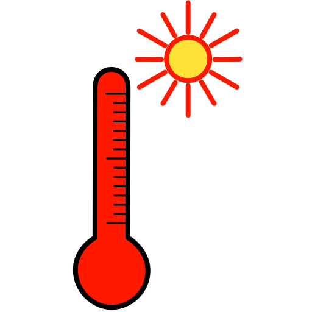
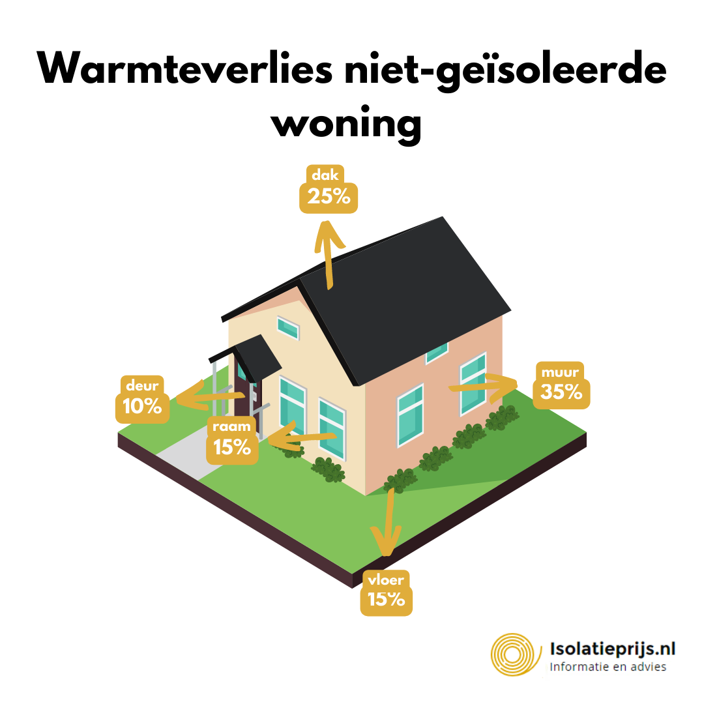
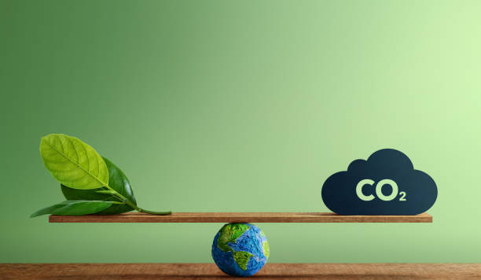
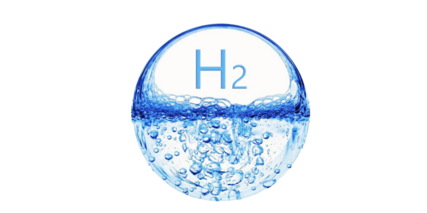

Inleiding
Zoals je ziet zijn er twee posters, de ene poster gaat vooral over wat warmten en tempratuur nou precies is? De anderen gaat juist over klimaat verandering en hoe dat in zijn werking gaat. Vaak is er veel verwarring over klimaat verandering dit ook met de reden dat er best veel nepnieuws over word verspreit. Dit onderwerp gaat dus over zoals je waarschijnlijk al door had over klimaat verandering en hoe dat in elkaar zit en hoe je het nep nieuws kan herkenen.Warmten en tempratuur wat is het verschil?'
Als eerst moet je begrijpen wat nou precies het verschil is tussen tempratuur en warmten, warmten is de beweging van energie. Tempratuur is de meeteenheid om aan te geven hoe warm of koud iets is.
Behoud van warmten
De aarde heeft een kring om zich heen, dit is met een reden als de aarde dat niet zou hebben zou alle warmten stralen die de zon op de aarde zou richten er weer vanaf gaan. Door de kring rondom de aarde blijft de warmten veel beter vast houden. zo zie je nog meer voorbeelden op de poster. Isolatie is eigenlijk hetzelfde door bijvoorbeeld je huis te laten isoleren blijft de warmten binnen je huis veel beter dan wanneer je huis niet is geisoleert.
CO2
CO2 ook wel koolstofdioxide genoemt, je hebt er vast wel eens van gehoord. CO2 is een gas wat vrijkomt bij de verbranding van fossilebrandstoffen zoals benzine. CO2 is schadelijk voor het klimaat bij groten hoeveelheden.
Wat kunnen we er aan doen?
CO2 gaat niet zo maar weg, bomen hebben wel de mogelijkheid om CO2 in te ademen en O uit te ademen. Dan zou je denken zet de wereld vol met bomen dat kan helaas niet. Te veel bomen zorgen voor minder water en minder planten. Een anderen oplossing wat vaak genoemt word is het gebruiken van duurzamen energie zonnepannelen is daarvoor een goede investering maar wekken niet zo veel op als brandstof. Wat je ook vaak hoort is het gebruik van H2. Door H2 om te zetten in energie. Maar je hebt energie nodig om uit H2 energie op te wekken.
Fake news hoe zit dat en hoe herken je het nou?
Als het goed is begrijp je nu hoe klimaat verandering een beetje werkt. Dit zal je ook helpen om te herkennen. Fake news je hebt er vast wel eens van gehoord en waarschijnlijk wel eens tegen gekomen. Fake news is nieuws wat word verspreit door mensen dit gebeurd meestal expres. In fake news wordt meestal informatie verwerkt wat klopt maar dan heeft het niks met het onderwerp te maken. Een voorbeeld hiervan is een artikel met deze tekst er in "Het is nog nooit aangetoond dat menselijke CO₂ enig effect heeft op ons klimaat.” deze informatie klopt maar heeft niks te maken met klimaat verandering. Dit is een manier van nep nieuws.